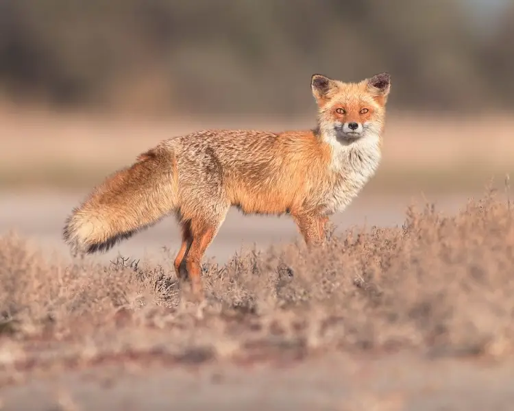
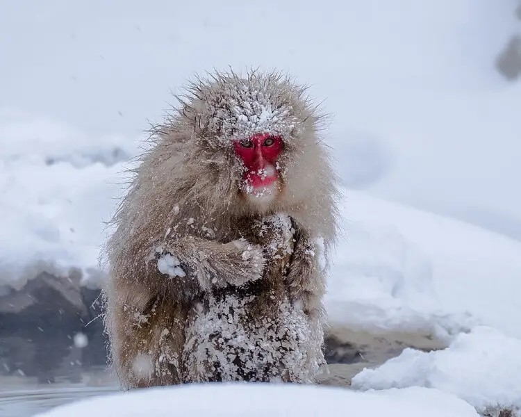

Red Fox
Meet the largest member of the true foxes. Apart from their large size, Red foxes are distinguished from other fox species by their ability to adapt quickly to new environments. During the winter their fur is dense, soft, silky, and relatively long. Red foxes that live in northern areas of their range, the fur is very long, dense, and fluffy, but it is shorter, sparser, and coarser in southern populations. Among northern foxes, the North

Japanese Macaque
Japanese macaques are also known as "snow monkeys" because some of them live in areas where snow covers the ground for months each year - no other non-human primate lives further north, nor in a colder climate. The coats of these macaques are well-adapted to the cold and their thickness increases as temperatures decrease. Japanese macaques can cope with temperatures as low as −20 °C (−4 °F).